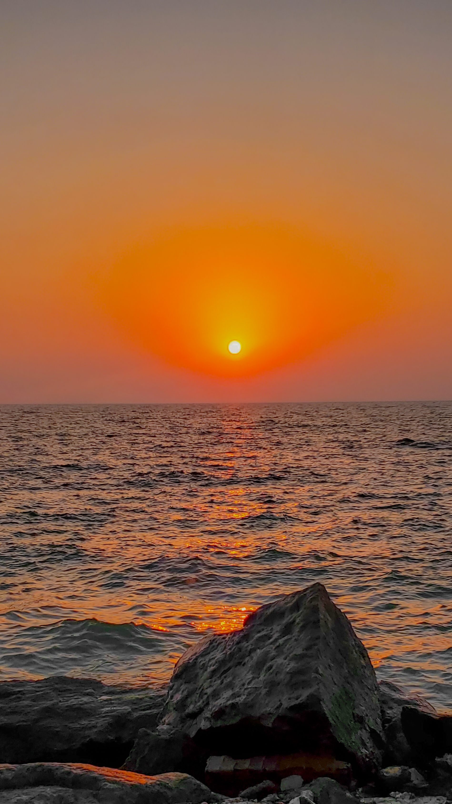
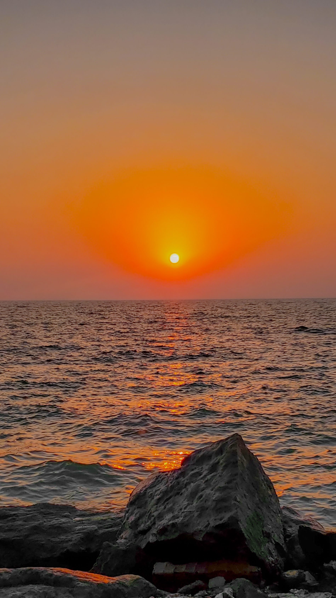

علاقة الفن بالتصوير:
الفن هو الوسيلة لتقديمك الى العالم كيفما انت كيفما تريد كيفما تشعر وفن التصوير المثل الأعلى.
في عالم (التصوير)،يمكن أخذ لقطتين للواقع:- لقطة حقيقي تنتج(صورة).- أو لقطة وهمية تنتج(فلاشا).
لقطات من روح الصور الميدانية في الحياة

 
